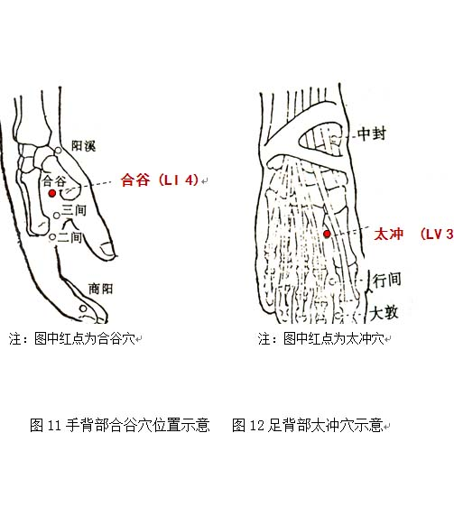

气郁质调理方法
1. 调体专用产品
【名称】佛手饮
【食用方法】每次1-2袋，以适量温开水冲调食用，每天2次。
2. 情志调摄
宜乐观开朗，多与他人相处，不苛求自己也不苛求他人。如心境抑郁不能排解时，要积极寻找原因，及时向朋友倾诉。
宜欣赏节奏欢快、旋律优美的乐曲如《金蛇狂舞》等，还适宜看喜剧、励志剧，以及轻松愉悦的相声表演。
3. 饮食调养
宜选用具有理气解郁作用的食物，如黄花菜、菊花、玫瑰花、茉莉花、大麦、金橘、柑橘、柚子等。
少食收敛酸涩的食物，如石榴、乌梅、青梅、杨梅、草莓、杨桃、酸枣、李子、柠檬、南瓜、泡菜等。
参考食疗方：（1）三花茶：茉莉花、菊花、玫瑰花，具有行气解郁功效，适合气郁体质者饮用。
（2）黄花菜瘦肉汤：黄花菜（水焯）、猪瘦肉、生姜，适量油盐。具有疏肝解郁功效，适合气郁体质者食用。
4. 起居调摄
尽量增加户外活动和社交，防止一人独处时心生凄凉。居室保持安静，宜宽敞、明亮。平日保持有规律的睡眠，睡前避免饮用茶、咖啡和可可等饮料。衣着宜柔软、透气、舒适。
5. 运动保健
宜多参加群体性体育运动项目，坚持做较大强度、较大负荷的“发泄式”锻炼，如跑步、登山、游泳。也可参与下棋、打牌等娱乐活动，分散注意力。
6. 穴位保健
（1）选穴：合谷、太冲穴
（2）定位：合谷位于手背，第1、2掌骨间，当第2掌骨桡侧的中点处（见图11）。太冲位于足背侧，当第1跖骨间隙的后方凹陷处（见图12）。
（3）操作：采用指揉的方法。用大拇指或中指指腹按压穴位，做轻柔缓和的环旋活动，以穴位感到酸胀为度，按揉2～3分钟。每天操作1～2次。
